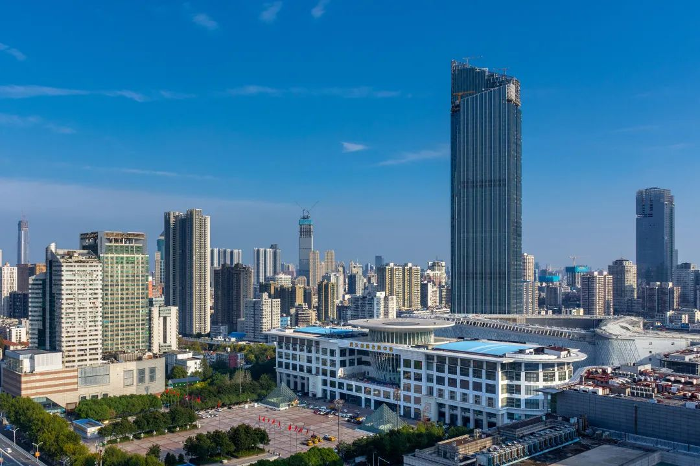
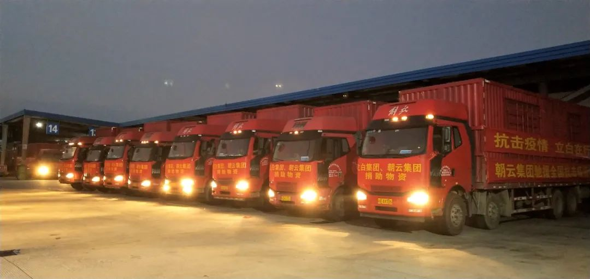
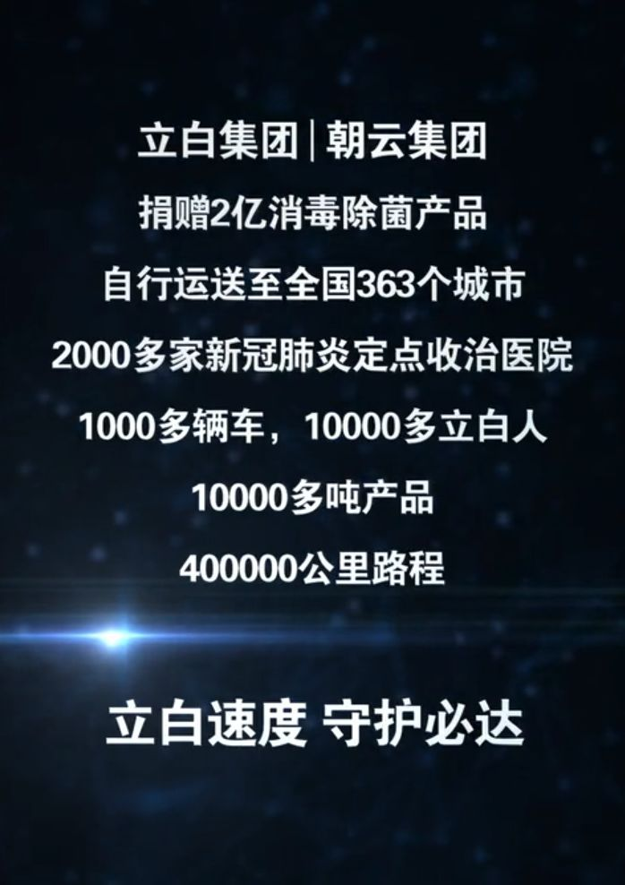
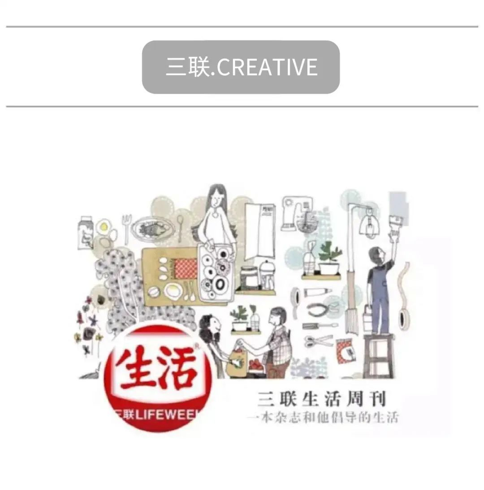

口述实录 | 疫情发生后，我们想到要解决“口罩脸”“酒精手”的问题
原文链接 备份链接 目前为止，伽蓝已累计捐款捐物超过1000万元，全国近2万名医护人员用上了伽蓝的产品，我们感到非常自豪，能够为一线医护人员尽一些绵薄之力。 口述 | 陈涓玲 整理 | 沈 林 最近的一个多月以来，每天从早到晚都在忙忙碌 …
一、2020年的春天这样到来
上周，武汉14家方舱医院全部封舱，体育馆终于回归了自己的本来面目。随着“疫情”的逐渐消散，2020年迎来了春天……

△ 武汉国际会展中心，14家方舱医院之一
春天来了，关于疫情的反思与复盘舆论已经持续了一段时间，大众视野大多集中在了那些为疫情奉献的医护人员和平凡且伟大的普通逆行者身上。但在整个抗击疫情洪流的过程中，还有一股强大的力量同样不容忽视。那就是无数企业和机构所作出的贡献。
如果我们在互联网上检索，可以寻找到诸多关于为疫情捐助款项、物资的企业名单，每份名单都是长长的，似乎要下拉很久才能到底，然而几乎每份名单都写着“部分”和“不完全统计”等字样。这说明，在过去两个月的时间里，有太多企业和机构坚实地、默默地献出了自己的力量。尽管作为受益者，我们很难将它们全部囊括在同一张名单中，但这种担当的力量、使命的力量和社会责任的力量让人敬佩。
今天，我们就讲一个关于一家企业和企业里那群人的故事，看看他们在面对疫情的旋涡时所做出的反应、抉择与努力。
春节前夕，当大多数人还沉浸在即将到来的假期喜悦里，一心期待着春节的到来时。立白集团董事长陈凯旋隐约感觉到了一丝风暴来临前的气息，那时的他或许并没有完全想到随后的两个月会如此波涛汹涌，但他已经基本做出了自己的判断，2020年的春节注定不会寻常。1月22日，关于新冠病毒疫情的讨论第一次进入了立白集团层面的办公会议，立白集团控股的朝云集团决定向广东33家新冠肺炎定点医院及湖北捐赠价值500万元的消毒除菌产品。同时为了稳定市场，集团内部发文，要求疫情期间旗下所有消毒除菌产品均不得涨价。大年初一，在立白集团放弃春节假期提前返岗人员的奋战下，一辆满载着消毒除菌产品的大货车驶入了广东省第二人民医院，随后送至全省其他定点收治医院。
病毒传播的速度惊人，严峻形势在不断攀升，人们的决策需要更快。1月27日，瞬息万变的新冠疫情已经露出了本来面目，一场持久的、全民的、不容有失的抗疫战即将开始。面对这样的情况，陈凯旋在广州立白集团的集团办公会议上宣布：
“立白集团及其控股朝云集团向全国2000多个新型冠状病毒定点收治医院捐助价值2亿元的消毒除菌产品，并自行配送。”

在会议后的第二天，立白、朝云以最快的速度成立了“2亿元物资捐赠项目联合行动小组”，所有业务部门，开始全面启动捐赠部署。立白集团知道，在医院前线消毒除菌产品全面短缺的情况下，为医护人员提供更安全的工作环境，抗击日益严重的疫情是当下最重要的事情。
在有条不紊的部署和积极行动下，立白集团及其控股朝云集团的捐赠物资陆续运抵各大定点收治医院。1月29日捐赠物资抵达雷神山医院建设现场；2月7日捐赠物资抵达武汉金银潭医院、武汉蔡甸区人民医院，武汉第四、第五、第九人民医院；3月13日捐赠物资抵达中国最北漠河市中心医院；截止到3月15日，提前完成所有定点收治医院捐赠物资的配送……

△ 立白集团、朝云集团抗击疫情物资运输车队
在疫情中，无论是病床床单、医护人员的工作服还是环境的卫生，消毒除菌都是刚性需求。因此，消毒除菌产品在疫情中瞬间成为了最匮乏的物资之一。作为中国日用化工企业的代表，立白集团毫不拖泥带水，这家曾经参与过非典、汶川、H1N1等多次捐助的中国企业，立刻决定像过去一样站出来。
后来，陈凯旋在个人公众号中这样写道：“面对这次突如其来、非常严重、影响大的全国性疫情和灾难，我们立白人责无旁贷，立白人必须要站出来，立白人必须要担当，立白人必须要有所作为，立白人必须要发挥作用，立白人必须要带好这个头。”
二、一场与时间的赛跑
电影《横空出世》，是一部讲述中国第一颗原子弹诞生幕后故事的老片。其中有一个在网络上反复流传的经典桥段，那是一场发生在戈壁滩上的动员会，清瘦的李雪健挥舞着胳膊喊道：“国内的仗打完了，国外的仗也打完了，一没让披红挂彩，二没让回家看望爹娘，一声令下来到大戈壁滩上，至今家人不知道我们在哪，不知道是死是活……”
今年的抗疫战虽不像当年的“两弹一星”工程那样残酷，但同样是一场无声的，需要破釜沉舟的战争。如果说果断地决策体现了立白集团的格局与担当，那么如何在春节前夕火线恢复生产，快速供给一线，则成为了一场与病毒展开的赛跑，这要求立白集团必须拿出强大的调动和生产能力。

1月22日，是立白集团副总裁杨作毅春节假期的第一天，但一通紧急的电话让他必须立刻重回工作状态。当时他脑海中的第一个反应是：任务艰巨！特殊时期如何复工，如何提高产能，如何解决原料问题和运输问题？他们面临的困难指数相较平日，是呈几何式增长的。
“这是一次无法想象的挑战，解决立白问题还要从产业链着手才行。”杨作毅这样说。
面对这些问题，杨作毅立刻要求分、子公司新增许可资质，并通过政府为立白发出的11份跨省跨区政府协调函推动解决原料供应、物流运输等问题。
在老家筹备父亲70大寿的李梓华也在大年初一接到了马上启动2亿消毒除菌产品生产的通知。在立白集团生产管理部负责生产计划工作的李梓华第二天一早便带着太太与孩子驱车返回广州。
李梓华的太太同样在立白集团控股的朝云集团负责生产调度，两个人整个春节假期几乎从早到晚都蹲在电脑前。李梓华说：“我家当时就只有一台电脑，我和老婆经常互相抢电脑用。”那几天他连续加班36个小时，就像打了鸡血一样。
保障和协调工作启动后，具体的生产工作也在步履不停地进行，朝云集团供应管理部的花家国亲历了整个过程。花家国是这次公司捐赠的主力产品“威王84消毒液”的生产供应管理负责人。
春节时，他正在老家，为了更快速、高效地处理工作，他准备立刻返回广州。对此，花太太起初并不同意，但几经纠结后，太太还是放了行，不过由于担心他的安全，太太要求：“你要回去上班也行，坐飞机回去，绝对不能开车。”所以，立白集团及其控股的朝云集团捐赠的2亿元消毒除菌产品能够比约定的时间提前5天全部送达全国363座城市的2000多所定点收治医院，不仅是立白人的努力，也离不开立白家属们的理解与支持。在抗击疫情的赛跑中，立白人并不是孤军奋战。

△ 立白集团、朝云集团捐赠的消毒除菌产品进入全国新型肺炎治疗点医院，与医护人员共同抗击疫情
最终，在花家国和生产保障小组的共同努力下，立白集团及其控股的朝云集团在原本仅有马鞍山立白和番禺立白两个生产基地具备生产消毒除菌产品资质的情况下，又迅速新增了四平立白、四川立白、新乡立白基地，大大提高的产能让消毒除菌产品能够及时的送往各个医院。
在花家国紧锣密鼓地开展生产的同时，立白集团工艺主任工程师卢楚杰正在艰辛的返岗途中。为了能够回工厂复工，卢楚杰在路边苦等了6个小时的车，最终打滴滴奔波300多公里。
回到广州后，卢楚杰面对的工作压力相当繁重，在一周内，产能翻番，且每天调试生产装置的时间仅有1个小时。为精确掌握管线布局，并在项目开工前赶制出技术改造方案，他爬上十几米的储罐，钻进仅有几十厘米的管底，用米尺测量了每一寸管线。
面对巨大的改造量和人手紧缺的困难，他连续加班加点，与4名同事轮番上阵，仅用5天时间干出了15天的工作量；为保证生产线持续不停产，他在工人吃饭、轮班的1小时空档进行设备调试，把平常2个多小时的工作压缩到了短短1个小时的限期。
最终，他负责的技改项目，通过优化设备、改进工艺，使番禺立白消毒液日均产能提升了278%，整个集团消毒液生产能力由原来的165吨/天，提升至375吨/天，有效扩大了产能。
三、40万公里的路途
与消毒除菌产品的生产相比，防控疫情捐赠物品的运输工作更像一场真真正正的赛跑。

△ 许晓东——立白集团副总裁，此次捐赠项目总负责人
立白集团副总裁许晓东是捐赠项目的总负责人，从春节假期开始的第一天，他就开启了24小时在岗，7天无休的工作模式。由于人手紧缺，为了及时将捐赠产品送达定点救治医院，许晓东甚至连日“肉搏上阵”，脱下西装，换上手套，搬运、开车、为运输车队打气鼓劲儿，有时还随车将捐赠产品送达广州定点救护医院，连工人们都拿他开玩笑说：“忙得不像个副总裁”。
相比副总裁许晓东，立白集团物流管理部的“大总管”刘鹏所作的工作更为具体，他四处找人、找车、找装卸工，安排协调物流运输……总之，集团对他的要求就是：“无论如何也要把产品快速送到医院去。”
立白集团的消毒除菌产品分布在全国各地的工厂和仓库，要根据各个医院的需求将33个单品进行“全国大挪移”，从北调到南、从西调到东，又不给医院造成一丝麻烦，刘鹏的工作难度可想而知。有一次，一名司机一人将一车货从广州送到武汉，经过重重关卡到达武汉之后连泡碗面的热水都没有，晚上也找不到地方休息只能睡车里……“我们必须不停地想办法，‘云护送’他完成送货任务。”
与刘鹏共同解决物流运输困难的还有他的同事段先通。在疫情期间，所需的车辆和运力倍增，且时值春节期间，各地政府又在严格管控往返车辆，导致车源锐减，运力严重不足。
为此，段先通只得广泛“撒网”不停地接打电话，寻找车源。有时中午过了饭点才想起要吃饭，刚煮了面，又跑去接电话和回微信，终于把工作做完，面却糊了。“我要给自己煮一碗不糊的面条”这是段先通疫情之后最大的愿望。
在捐助产品逐渐到位后，负责客服订单支持模块的钟海红开始忙碌起来，大年初四，她还是组织同事们远程居家办公，可不少同事家中没有“利索”的电脑，远程办公很难开展，这怎么办？那只能拆公司的台式电脑回家了！钟海红为此联系了IT部的同事，在公司的电脑上分别安装上支持在家办公的系统，再开着私家车接送同事们来公司取电脑。
在许晓东、刘鹏、段先通、钟海红和其他无数同事的努力下，最终2亿元的消毒除菌产品提前完成配送，据不完全统计，为了运送这些产品，立白人和司机师傅们共行驶40万公里，这个距离，相当绕赤道跑了10圈。
△ 点击视频 △
2亿初心 见证速度
截止3月15日，在1万余名立白人的努力下，调动车辆1000多辆，立白集团及其控股的朝云集团捐赠的价值2亿元，超1万吨的消毒除菌产品，全部配送至全国363座城市的2000多家新冠病毒定点收治医院。

无论在什么时候，相比个人，企业的力量要宏大得多。假如把疫情比作一场洪水，那些逆行的个人就像阻拦洪水的一颗颗石头，他们聚少成多，积沙成塔。而面对洪水，有担当、有社会责任感的企业，则既像一堵堵实实在在的大堤，又像一面面旗帜，是真正可以独当一面的力量。
所有参与到此次捐赠工作中的立白人，都为抗击疫情献出了自己绵薄的力量，他们几乎是出于本能地为本次捐赠项目放弃假期、不惧疫情、加班加点，而这1万多名立白人出自潜意识的善意，最终汇聚成了立白集团的担当与社会责任，并缔造了守护必达的立白速度。
这个世界上最著名的推销员乔·吉拉德曾说过一句名言：“你一生中卖的唯一产品就是你自己”。
在平日，企业和机构作为社会的组成部分。如果社会是一辆飞奔向前的汽车，那么社会中的每个人就像一颗颗坚实的铆钉，而企业和机构就是由这一颗颗铆钉组成的零件，驱动着整个社会滚滚前行。而在疫情期间，只有社会责任才能产生社会效益，企业更是可以依靠自身力量抗击疫情的中流砥柱，需要他们拿出担当、拿出勇气、拿出行动为人们保驾护航。
文章末尾点击“阅读原文”，
立白速度，守护必达！
（部分图片来自立白集团、视觉中国）
策划：三联.CREATIVE
微信编辑/设计排版：宋嘉慧
作者：morlee
⊙文章版权归《三联生活周刊》所有，欢迎转发到朋友圈，转载请联系后台。

原文链接 备份链接 目前为止，伽蓝已累计捐款捐物超过1000万元，全国近2万名医护人员用上了伽蓝的产品，我们感到非常自豪，能够为一线医护人员尽一些绵薄之力。 口述 | 陈涓玲 整理 | 沈 林 最近的一个多月以来，每天从早到晚都在忙忙碌 …
原文链接 备份链接 世界卫生组织（WHO）总干事谭德塞表示，对于口罩、防护服、手套等医疗护具的需求在近期增长100倍，价格也上涨20倍，积累的订单达到4-6个月，给全球生产供应链带来极为严重影响 文 |《财经》记者 王晓枫 编辑 | 郝 …
原文链接 备份链接 什么拉长了社会捐赠物资从红十字会的仓库到疫情一线医务人员手中的最后短暂的路程？又是谁夺走了医生上战场的武器？ 记者 | 郭苏妍 叶雨晨 邓舒夏 王一越 编辑 | 张云亭 制图 | 程 星 2月1日，中国红十字总会工作 …
原文链接 备份链接 《人物》记者向多位寻求捐赠的医护人员咨询，他们均表示，很多医院的医用外科口罩库存量大概在一个星期左右，「平常有时口罩也戴一天，如果不去视察病房，有的科室没有戴口罩的需求。」用得不多、存量少，脆弱的库存和供应系统很快被疫 …
原文链接 备份链接 几位口罩行业的从业者，都是在大量微信、电话疯狂轰炸的间歇，接受我们采访的。所有人的语速都异常急促——在过去的一周时间内，他们接过工信部、各地应急办、市级政府的电话；也接过各省医院、药店、大小代理商的电话；还有从未打过交 …